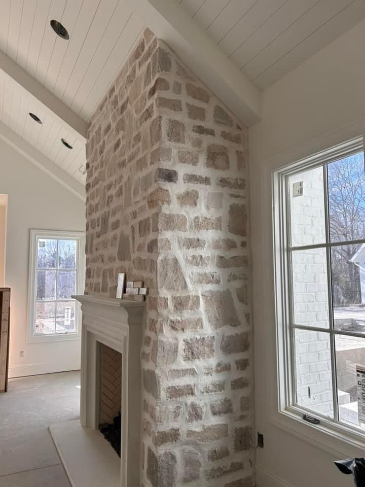
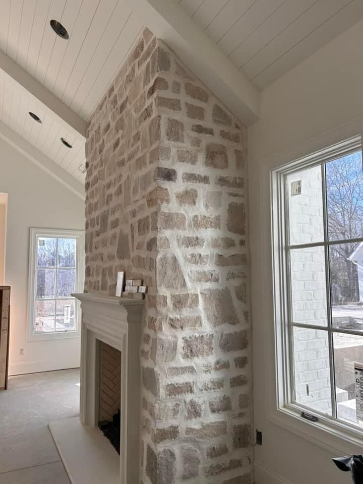
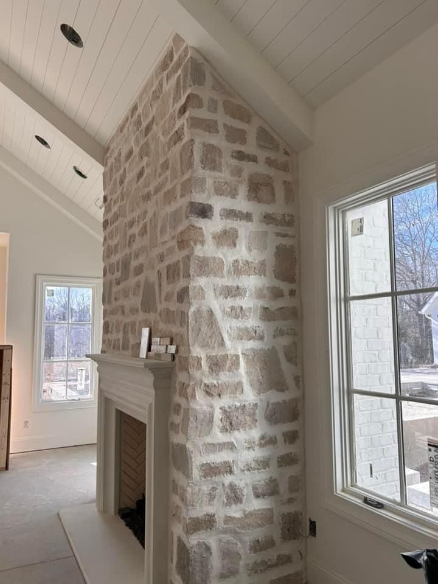

Fireplaces Enhanced with Natural Stone
Add natural elegance and character to your interiors with our stone-clad fireplace designs. Get inspired by our featured projects below.

 



Add natural elegance and character to your interiors with our stone-clad fireplace designs. Get inspired by our featured projects below.
